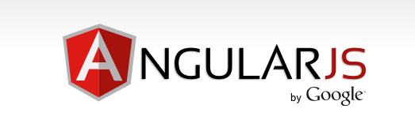

name: inverse layout: true class: center, middle, inverse --- #ANGULAR JS [ Prashant Sahni ] [ Web Developer ] --- layout: false class: resource-link # What is angular js? # Examples # Angular Vocabulary ## Slides:- ##https://github.com/psahni/slides ## Code:- ##https://github.com/psahni/slides/tree/master/angular-js/code --- layout: true class: center, middle,inverse, bg-red ---  ## AngularJS is a javascript framework used for creating single page applications. --- # Single Page Application ? -- Framework ? --- # $ Welcome to the ng-world --- class: fb-blue #Data Binding <a href='https://docs.angularjs.org/guide/databinding' target='_blank'>Documentation</a> --- class: fb-blue #$scope <a href='https://docs.angularjs.org/guide/scope' target='_blank'>Documentation</a> --- class: fb-blue #Model | View | Controllers --- class: fb-blue #Directives <a href='https://docs.angularjs.org/guide/directive' target='_blank'>Documentation</a> --- class: fb-blue #Factory and Services <a href='https://docs.angularjs.org/guide/services' target='_blank'>Documentation</a> --- class: fb-blue #Dependency injection <a href='https://docs.angularjs.org/guide/di' target='_blank'>Documentation</a> --- class: fb-blue #Filters <a href='https://docs.angularjs.org/guide/filter' target='_blank'>Documentation</a> --- class: fb-blue #Routing <a href='https://docs.angularjs.org/api/ngRoute/service/$route#example' target='_blank'>Documentation</a> --- class: fb-blue #Forms <a href='https://docs.angularjs.org/guide/forms' target='_blank'>Documentation</a> --- class: no-middle # Way to Learn AngularJs ####[Phone Cat Application](https://docs.angularjs.org/tutorial) ####[Angular Recipes](http://leanpub.com/recipes-with-angular-js/read) ####[Egghead videos](https://egghead.io/technologies/angularjs) ####https://docs.angularjs.org/guide/ ####http://coenraets.org/apps/angular-directory/ ####http://todomvc.com/architecture-examples/angularjs/#/ ##Others ####http://efytimes.com/e1/fullnews.asp?edid=136448 ####https://builtwith.angularjs.org/ ####[AngaularJS Learning](https://github.com/jmcunningham/AngularJS-Learning) --- ##THANKS ##EMAIL: prashant.sahni@trantor.com